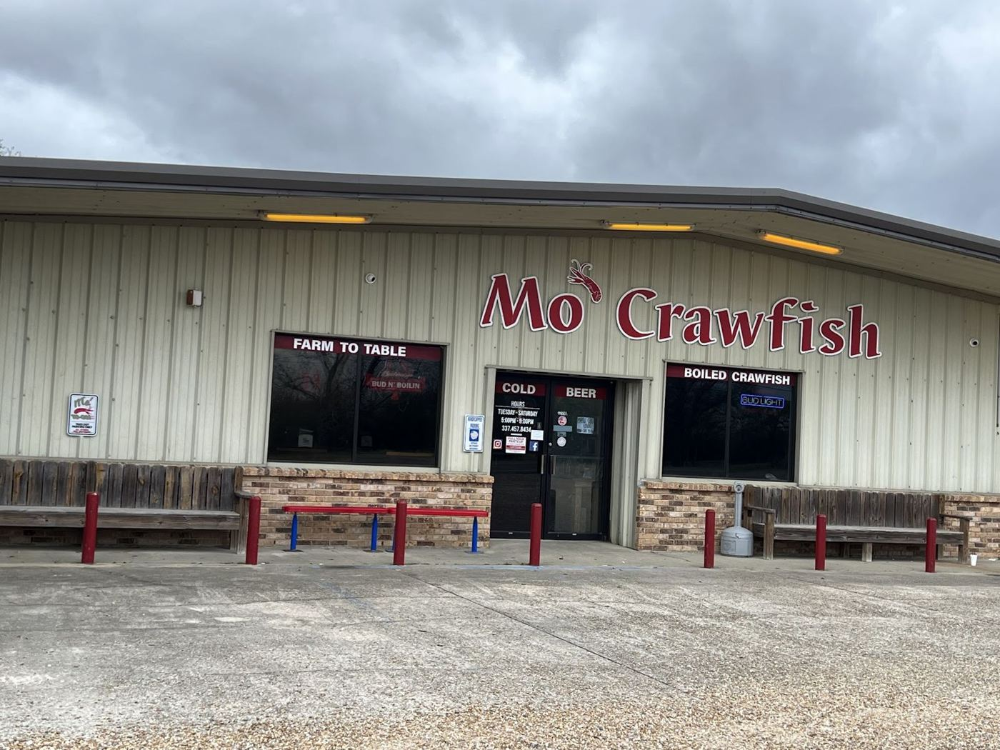
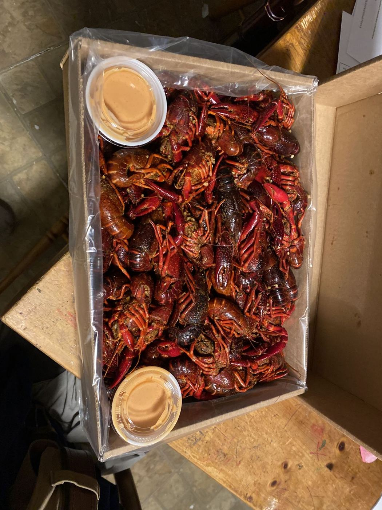
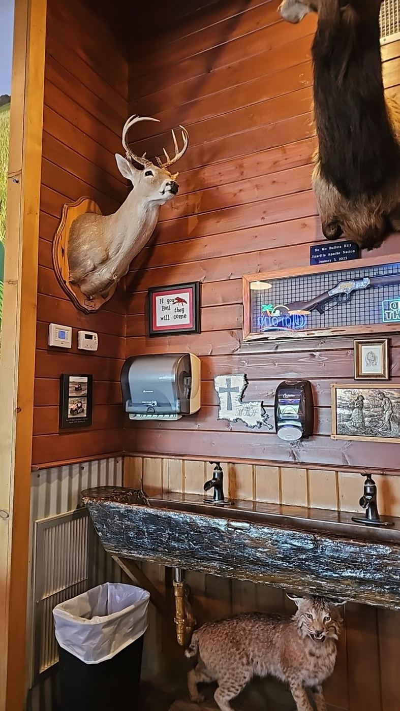
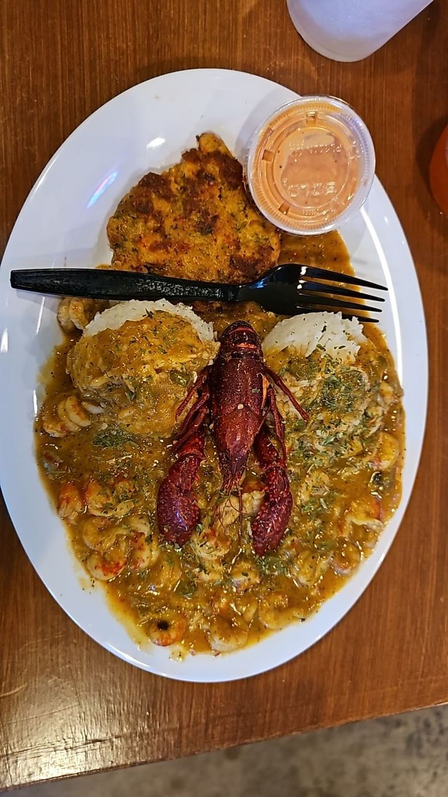

Big crawfish. Fresh garlic.
Big, clean-tasting crawfish with fresh garlic in the seasoning. Dine in or take out on the Crowley Eunice Hwy.

Mo’ Crawfish is a family-owned restaurant in Eunice, Louisiana. Guests describe it as inviting, clean and friendly, and say the owners have even shown them behind the scenes of the operation. Some travelers waited hours for it to open.
The restaurant holds a 4.7-star rating from 142 Google reviews. It opens Wednesday through Saturday evenings, for dining in or taking out.
Photographs



Letters to the editor
Fantastic restaurant with wonderful owners! The crawfish were both boiled and seasoned perfectly!
Love coming here with friends and family. Best crawfish place in Louisiana
Great place and great food. Even better that it’s family owned. Thankful to the owners for even showing us the behind scenes production of their operation.
Met my cousins here while visiting Louisiana from Washington State. Definitely had been awhile since I had crawfish, but to me, this was outstanding. Perfectly boiled crawfish and asked for extra spice which was on point. We had very friendly service as well. Highly recommend this restaurant.
Notices
Public notice: hours
| Mon–Tue | Closed |
| Wed–Sat | 5–9 PM |
| Sun | Closed |
29017 Crowley Eunice Hwy, Eunice, LA 70535
(337) 788-2722Directions